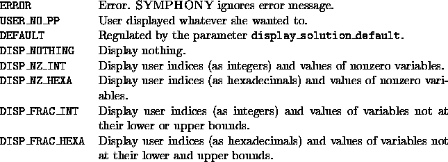

int user_display_solution(void *user, int which_sol,
int varnum, int *indices, double *values)
Given a solution to an LP relaxation (the indices and values of the nonzero variables) the user can (graphically) display it. The which_sol argument shows what kind of solution is passed to the function: DISP_FEAS_SOLUTION indicates a solution feasible to the original IP problem, DISP_RELAXED_SOLUTION indicates the solution to any LP relaxation and DISP_FINAL_RELAXED_SOLUTION indicates the solution to an LP relaxation when no cut has been found. There is no post-processing. Default options print out user indices and values of nonzero or fractional variables on the standard output.

